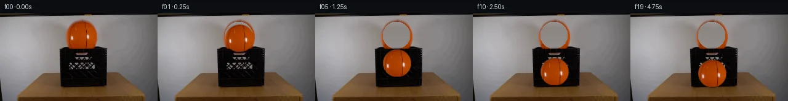

![首帧]()

Round 00
2026-11-04T23:20:04.096757+00:00像素候选变化代码 +186/−0inspection 更新
pixels e5faf90bf32a9888 · code 61be2bf6538c4e08
查看本轮 generate.py 真实 diff
--- previous/generate.py
+++ current/generate.py
@@ -0,0 +1,186 @@
+#!/usr/bin/env python3
+"""PixelWorld-Text: Basketball released over black plastic crate animation.
+20-frame sequence at 256×144, 4 fps, 5 seconds.
+Frame 00 is exactly first_frame.png. The ball falls into the crate with physics."""
+
+import numpy as np
+from PIL import Image, ImageDraw
+from pathlib import Path
+
+CASE_DIR = Path(__file__).parent.absolute()
+TMP = CASE_DIR / '.tmp'
+TMP.mkdir(exist_ok=True)
+
+# ── Load first frame ─────────────────────────────────────────────────
+first = np.array(Image.open(CASE_DIR / 'first_frame.png')).astype(np.float64)
+assert first.shape == (144, 256, 3)
+
+# ── Ball parameters (measured from first_frame.png) ──────────────────
+BALL_CY0, BALL_CX0 = 35.5, 131.5
+BALL_R = 22.0
+
+yg_f, xg_f = np.ogrid[:144, :256]
+yg_f = yg_f.astype(np.float64)
+xg_f = xg_f.astype(np.float64)
+dist0 = np.sqrt((yg_f - BALL_CY0)**2 + (xg_f - BALL_CX0)**2)
+
+# ── Step 1: Extract ball as a sprite patch ───────────────────────────
+# Use a patch around the ball: +-25 pixels from center → 50x51 patch
+patch_r = int(BALL_R) + 4 # 26
+y0 = int(BALL_CY0) - patch_r
+y1 = int(BALL_CY0) + patch_r + 1
+x0 = int(BALL_CX0) - patch_r
+x1 = int(BALL_CX0) + patch_r + 1
+print(f"Ball patch: y=[{y0},{y1}), x=[{x0},{x1}) size={(y1-y0)}x{(x1-x0)}")
+
+ball_patch_data = first[y0:y1, x0:x1].copy() # ball sprite in patch coordinates
+
+# Create alpha mask within the patch (soft, same as original rendering)
+py_coords = np.arange(y0, y1, dtype=np.float64)[:, None] # (ph, 1)
+px_coords = np.arange(x0, x1, dtype=np.float64)[None, :] # (1, pw)
+patch_dist = np.sqrt((py_coords - BALL_CY0)**2 + (px_coords - BALL_CX0)**2)
+patch_alpha_soft = np.clip((BALL_R + 1.5 - patch_dist) / 1.5, 0.0, 1.0)
+patch_alpha_soft_3 = np.stack([patch_alpha_soft]*3, axis=-1)
+
+# ── Step 2: Create clean background ──────────────────────────────────
+bg = first.copy()
+
+# Fill ball region with wall color interpolation
+left_ref_x = 95
+right_ref_x = 170
+left_wall = bg[:, left_ref_x, :].copy()
+right_wall = bg[:, right_ref_x, :].copy()
+
+# Ball region in original position
+ball_orig_mask = dist0 <= BALL_R + 0.5
+for y in range(144):
+ row_mask = ball_orig_mask[y, :]
+ if row_mask.any():
+ cols = np.where(row_mask)[0]
+ fracs = (cols.astype(np.float64) - left_ref_x) / (right_ref_x - left_ref_x)
+ bg[y, cols] = ((1 - fracs)[:, None] * left_wall[y][None, :] +
+ fracs[:, None] * right_wall[y][None, :])
+
+# ── Step 3: Physics simulation ───────────────────────────────────────
+G = 8.0 # gravity in pixels/frame²
+REST_Y = 98.0 # ball center y resting on crate bottom
+
+def simulate():
+ y = BALL_CY0
+ x = BALL_CX0
+ vy = 0.0
+ results = [(y, x, vy)]
+
+ for _ in range(1, 20):
+ dt = 1.0
+ y_next = y + vy + 0.5 * G
+ vy_next = vy + G
+
+ if y_next >= REST_Y:
+ a, b, c = 0.5 * G, vy, y - REST_Y
+ disc = b*b - 4*a*c
+ if disc >= 0:
+ t_col = max(0.0, min(1.0, (-b + np.sqrt(disc)) / (2*a)))
+ v_impact = vy + G * t_col
+ bounce_count = sum(1 for _, _, v in results if v < -2.0 and abs(v) > 5.0)
+ cor = max(0.15, 0.65 - 0.15 * bounce_count)
+ v_rebound = -v_impact * cor
… diff truncated; 99 more lines …